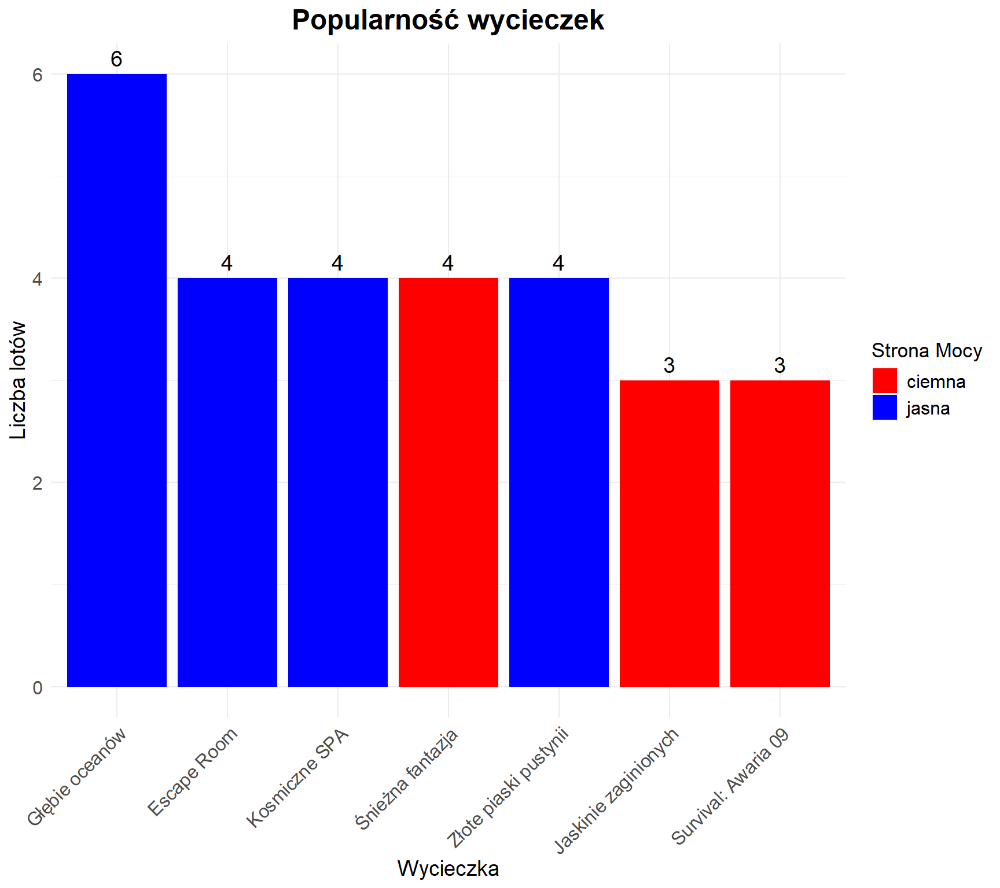
Analiza danych firmy „Space-U”
1. Wstęp
1.1. Cel i zakres raportu
Niniejszy raport został wykonany na zlecenie firmy „Space-U”, organizującej konsumenckie załogowe loty kosmiczne, a w szczególności wycieczki z jasną i ciemną stroną mocy w świecie Star Wars. Celem raportu jest analiza danych zebranych przez firmę podczas 2 lat obecności na rynku, która pozwoli na wyciągnięcie wniosków na temat dotychczasowej działalności - związanych z nią kosztów oraz zysków, a także stosunku klientów do proponowanych ofert. Dzięki temu, możliwe będzie wskazanie kierunku rozwoju dla firmy w najbliższej przyszłości.
W niniejszej analizie skoncentrujemy się na udzieleniu odpowiedzi na następujące pytania:
- Które rodzaje wycieczek oferowanych przez firmę „Space-U” cieszą się największą popularnością? Jak przedstawia się bilans zysków i strat dla poszczególnych typów podróży? Czy są dla firmy opłacalne?
- Jak kształtuje się liczba obsłużonych klientów w poszczególnych miesiącach działalności? Czy na podstawie tych danych można wnioskować o rozwoju lub spadku aktywności firmy?
- Jakie typy wycieczek skłaniają klientów do ponownego skorzystania z usług firmy? Czy istnieją oferty, po których klienci nie wracają? Czy można na tej podstawie wycofać niektóre wycieczki z oferty?
- Który z typów wycieczek cieszy się większą popularnością – wycieczki z jasną czy ciemną stroną mocy?
- Jak często podczas wyjazdów zdarzają się wypadki konkretnych typów i jaka część klientów jest ubezpieczona na wypadek ich wystąpienia?
- Czy najlepiej oceniane wycieczki są również najczęściej wybierane przez klientów?
- Które duety pracowników – pilot i przewodnik – najczęściej wspólnie realizowały wyjazdy?
2. Analiza popularności wycieczek
Jednym z ważnych aspektów działalności firmy turystycznej jest dopasowanie oferty do oczekiwań klientów. Dlatego analiza popularności poszczególnych typów wycieczek ma kluczowe znaczenie – pozwala lepiej planować działania marketingowe, rozwijać ofertę oraz skupić się na tych wyjazdach, które cieszą się największym zainteresowaniem. Dzięki temu firma może efektywniej wykorzystywać zasoby i zwiększać satysfakcję klientów.
2.1. Liczba lotów według rodzajów wycieczek
Na podstawie danych zgromadzonych w bazie danych, możliwe było określenie, które wycieczki cieszyły się największą popularnością wśród klientów. Spójrzmy teraz na liczbę zorganizowanych wylotów dla poszczególnych wycieczek.
Łącznie zorganizowano 30 wyjazdów. Najczęściej wybieraną wycieczką była: “Głębie oceanów”, która odbyła się 7 razy. Z kolei najmniej popularna okazała się wycieczka: “Kosmiczne SPA”, z liczbą wylotów równą 2.
2.2. Liczba klientów w podziale na typy wycieczek
Sprawdźmy jak wygląda to w przypadku ilości obsłużonych podróżnych.
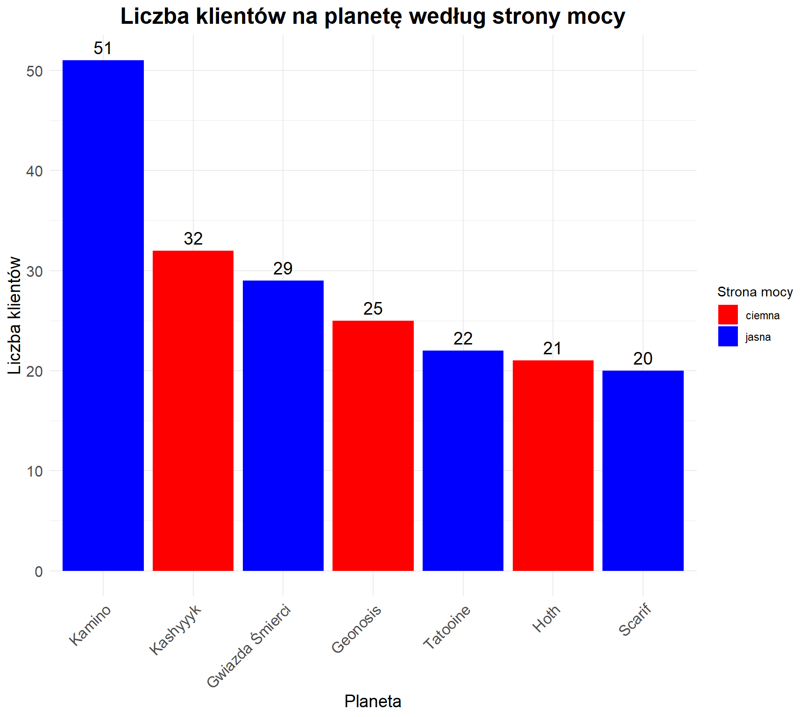
Łącznie firma obsłużyła 243 klientów. Najpopularniejsza wycieczka pod względem liczby klientów to: “Escape Room” (52 klientów), najmniej popularna okazała się: “Kosmiczne SPA” (19 klientów).
2.3. Bilans zysków i strat dla poszczególnych wycieczek
Analiza bilansu zysków i strat dla różnych typów wycieczek oferowanych przez firmę stanowi kluczowy element oceny rentowności działalności. Pozwala ona nie tylko ocenić, które rodzaje wycieczek generują największe przychody, ale również które wiążą się z najwyższymi kosztami operacyjnymi, co ma bezpośredni wpływ na ostateczny zysk netto.
W ramach analizy zestawiono przychody uzyskane z tytułu sprzedaży konkretnych rodzajów wycieczek z odpowiadającymi im kosztami – takimi jak zakwaterowanie, wyżywienie, opłaty przewodników, transport, naprawy pojazdów czy wydatki logistyczne. Dzięki temu możliwe było określenie, które typy wyjazdów są najbardziej opłacalne, a które przynoszą mniejsze zyski lub wręcz straty.
W tym celu posłużmy się najpierw średnią ceną wycieczki.

W celu uzyskania pełniejszego obrazu rentowności działalności firmy, przeprowadzono także analizę łącznych zysków generowanych przez wycieczki do poszczególnych planet, z uwzględnieniem liczby uczestników. W odróżnieniu od wcześniejszego zestawienia, które bazowało na średnich wartościach dla jednej wycieczki (jeden wylot), niniejsze podsumowanie uwzględnia realną skalę sprzedaży – czyli ilość podróżnych, którzy skorzystali z każdej z ofert. Takie podejście pozwala precyzyjnie określić, które kierunki nie tylko są popularne, ale również najbardziej dochodowe w ujęciu globalnym.
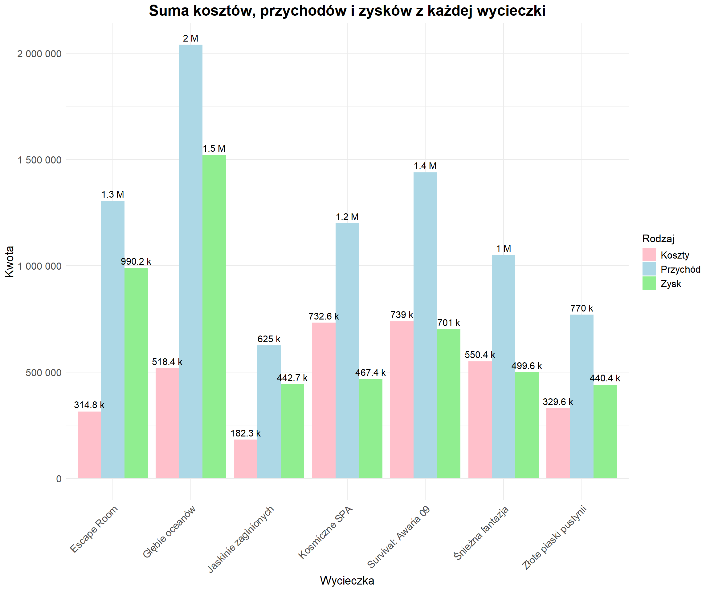
2.4. Łączna dochodowość – analiza ogólna
Na zakończenie analizy działalności firmy dokonano zestawienia podstawowych danych finansowych. Uwzględniono trzy kluczowe elementy: koszty, przychody oraz zysk.
Na całkowite koszty złożyły się:
Koszty organizacji wyjazdów,
Koszty związane z zakwaterowaniem i wyżywieniem klientów podczas wycieczki,
Koszty wynagrodzeń pracowników.
Przychody, czyli łączna kwota uzyskana od klientów za wszystkie sprzedane wycieczki.
Zysk został obliczony jako różnica między przychodami a kosztami.
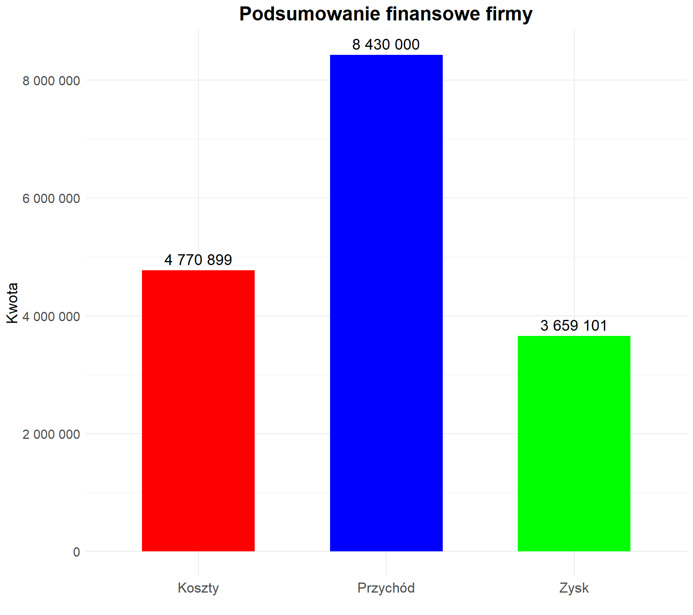
Ostatecznie uzyskano:
- Koszt organizacji lotów wyniósł 252 793 SpaceCoinów. Obejmuje on głównie wydatki związane z transportem oraz logistyką podróży.
- Koszt utrzymania klientów podczas wycieczek wyniósł 3 678 250 SpaceCoinów. W skład tej kategorii wchodzą m.in. zakwaterowanie, wyżywienie, usługi przewodników i atrakcje w ramach programu wycieczki.
- Wypłaty dla pracowników stanowiły 1 392 540 SpaceCoinów.
Łącznie koszty operacyjne firmy osiągnęły poziom 5 323 583 SpaceCoinów.
Z kolei przychód uzyskany ze sprzedaży wycieczek wyniósł 10 185 000 SpaceCoinów.
Na tej podstawie obliczono zysk firmy, który wyniósł 4 861 417 SpaceCoinów.
3. Rozwój firmy na przestrzeni lat
Celem przeprowadzonej analizy jest sprawdzenie, czy na podstawie wykresu liczby obsłużonych klientów w poszczególnych miesiącach można ocenić, czy firma się rozwija, czy podupada. W tym celu dane zostały przedstawione na wykresach, które umożliwiają identyfikowanie trendów oraz zmian w liczbie klientów na przestrzeni czasu.
3.1. Analiza w kontekście rocznym
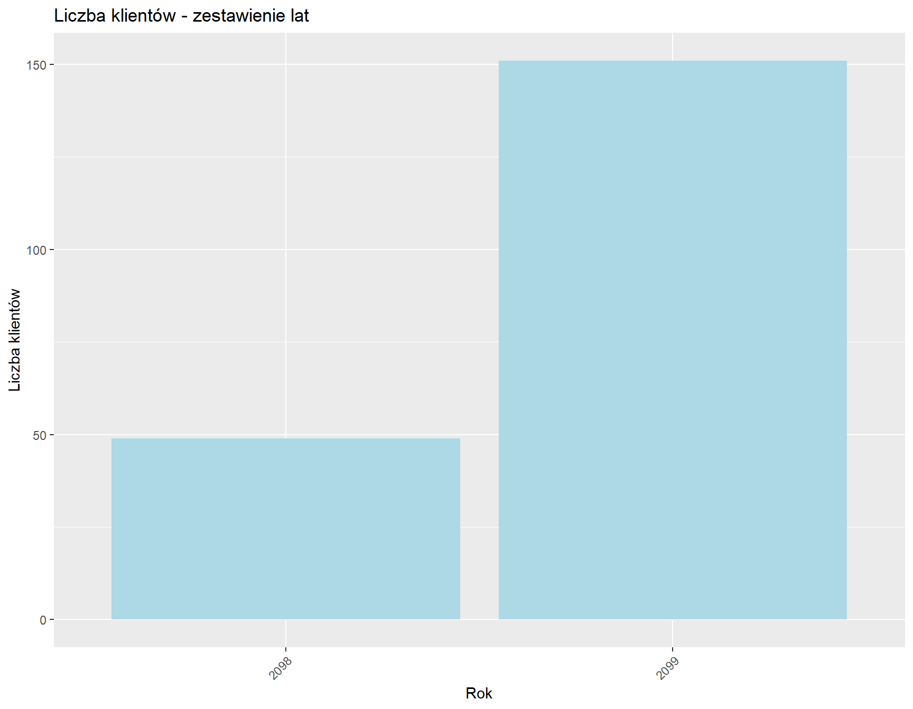
Porównując dane na tle lat możemy stwierdzić, że z roku na rok w naszej firmie przybywa coraz więcej klientów. W roku 2099 było 171 klientów. To o 99 klientów więcej niż w roku 2098 .
3.2. Analiza w kontekście miesięcznym
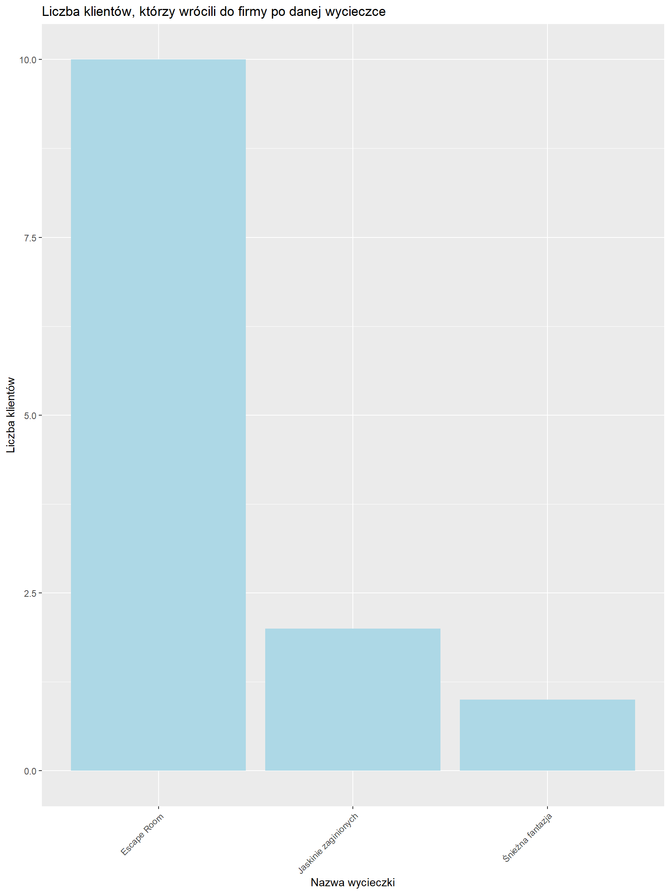
W roku 2099 najwięcej klientów skorzystało z usługi w 8 miesiącu. Dla porównania w roku 2098 najbardziej zyskownym miesiącem był czerwiec . Sugeruje to, że z roku na rok do firmy przybywa coraz więcej klientów.
4. Powrót klientów i ich preferencje
Kolejnym obszarem analizy była skłonność klientów do ponownego skorzystania z oferty firmy „Space-U”. W tym celu klienci zostali podzieleni na 2 grupy: osoby, które w ciągu 2 lat działalności firmy wzięły udział wyłącznie w jednej wycieczce, oraz tych, którzy zdecydowali się na więcej niż jeden wyjazd. Dla każdej z grup zliczono wycieczki, które wybrano podczas pierwszych wylotów – pierwsze wrażenia zdecydowały o tym, czy klienci ponownie obdarzyli firmę zaufaniem, czy też nie.
4.1. Klienci powracający
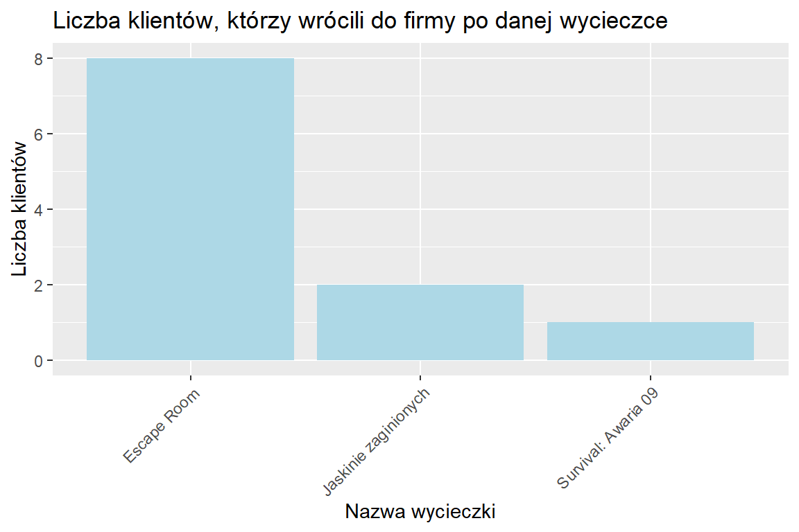
Analizując powracających klientów, zauważyliśmy, że osoby, które zdecydowały się na więcej niż jeden wyjazd, najczęściej wybierały podczas pierwszej podróży następujące wycieczki:Głębie oceanów, Survival: Awaria 09, Escape Room. Najwięcej klientów, którzy wrócili ponownie byli klienci, którzy za pierwszym razem wybrali wycieczkę: Głębie oceanów(łącznie9 klientów). Może to oznaczać, że zwiedzającym spodobał się klimat wycieczki, a w planie firmy na najbliższy czas należy uwzględnić organizację większej liczby wycieczek tego typu bądź wprowadzić do oferty więcej rodzajów wyjazdów w podobnym klimacie.
4.2. Klienci jednorazowi
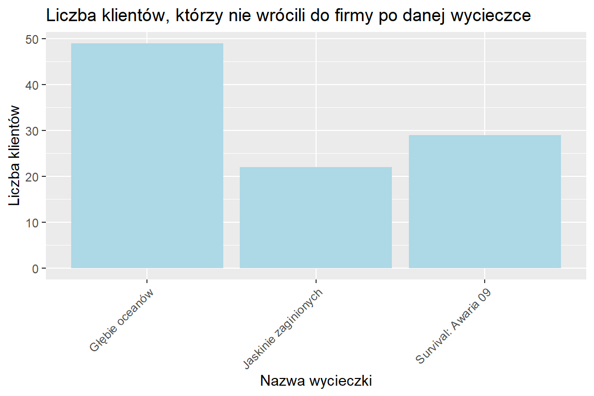
Klienci, którzy nie zdecydowali się na ponowny udział w wyjazdach organizowanych przez „Space-U”, najczęściej wybierali na pierwszym wyjeździe następujące wycieczki: Głębie oceanów, Złote piaski pustynii, Escape Room. Najczęściej wybieraną wśród nich wycieczką była wycieczka o nazwie Głębie oceanów, na którą wybrało się 36 klientów. Może to wskazywać, że oferta tych wycieczek nie spełnia w pełni oczekiwań znacznej części klientów, co może być przyczyną ich decyzji o niekorzystaniu z kolejnych wyjazdów organizowanych przez firmę. Warto w związku z tym rozważyć wprowadzenie zmian w programie tych wycieczek. Jeśli mimo to zainteresowanie pozostanie niskie, należy rozważyć wycofanie ich z oferty i zastąpienie bardziej atrakcyjnymi propozycjami.
5. Jasna czy ciemna strona mocy?
Firmę „Space-U” interesuje również, która ze stron mocy cieszy się większą popularnością wśród turystów - czy więcej osób wybiera się na wycieczki z jasną, czy z ciemną stroną mocy? Odpowiedź na to pytanie pomoże firmie lepiej dopasować ofertę wycieczek do oczekiwań klientów w najbliższej przyszłości. Aby uzyskać odpowiedź, liczymy, ile było rezerwacji wycieczek każdego z dwóch typów.
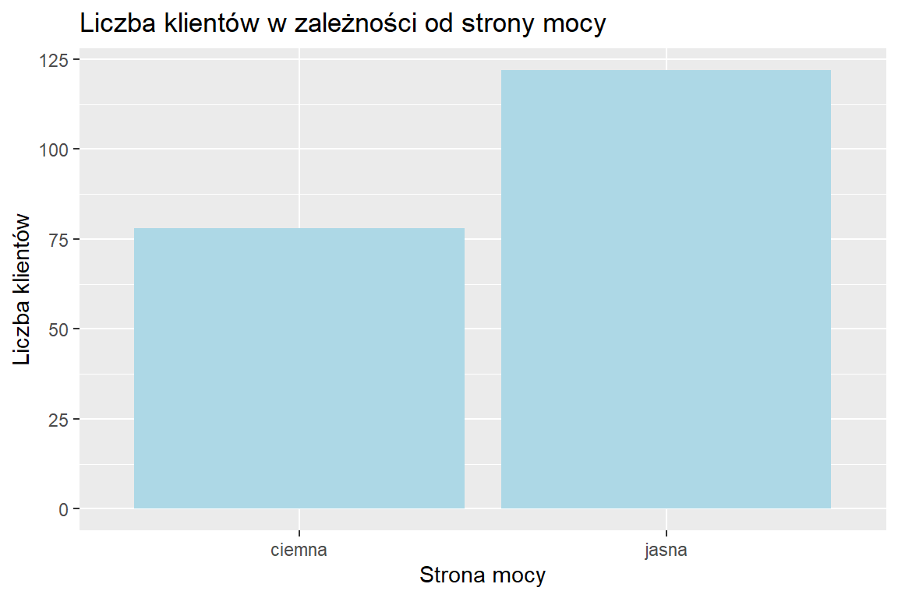
Z powyższego wykresu odczytać można, że to jasna strona mocy cieszy się większą popularnością wśród klientów firmy - na wycieczki tego typu wybrało się 164 klientów. Dla porównania, wycieczki oznaczone jako “ciemna strona mocy” wybrało 79 klientów. Wobec dużego zainteresowania klientów wyjazdami oznaczonymi jako “jasna strona mocy”, można wprowadzić do oferty firmy więcej wycieczek tego typu.
6. Bezpieczeństwo
Celem przeprowadzonej analizy jest sprawdzenie, jak często podczas podróży dochodzi do wypadków poszczególnych typów oraz jak duża część klientów jest ubezpieczona od skutków takiej sytuacji. W tym celu dane zostały przedstawione na wykresie, umożliwiającym identyfikowanie najczęściej występujących wypadków oraz ocenę stopnia ubezpieczenia klientów w obliczu takiego ryzyka.
6.1. Liczba i częstotliwość wypadków
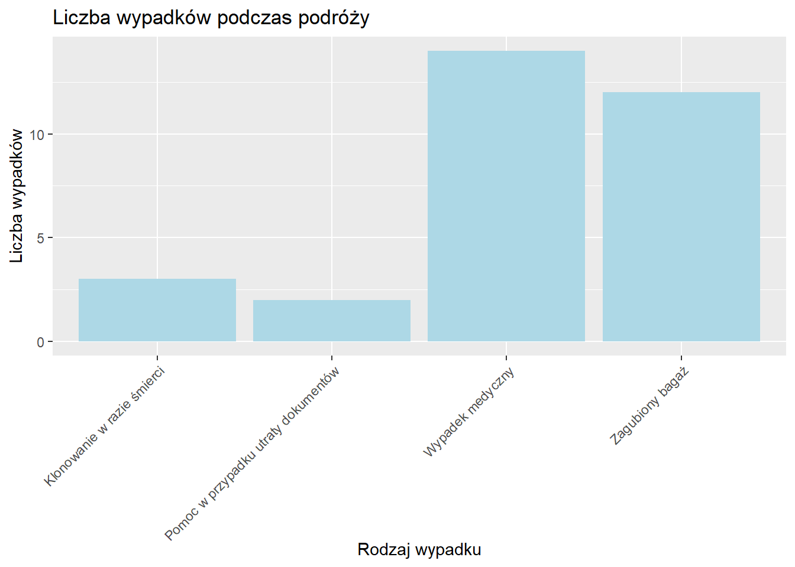
Powyższy wykres przedstawia liczbę wypadków podczas podróży w zależności od rodzaju wypadku. Jak możemy zauważyć najczęściej pojawiającym się wypadkiem jest “Wypadek medyczny”. Sugeruje nam to, że na ten rodzaj wypadku powinniśmy jako firma zalecać ubezpieczenie się naszym klientom.
6.2. Ubezpieczenia klientów w razie wypadków
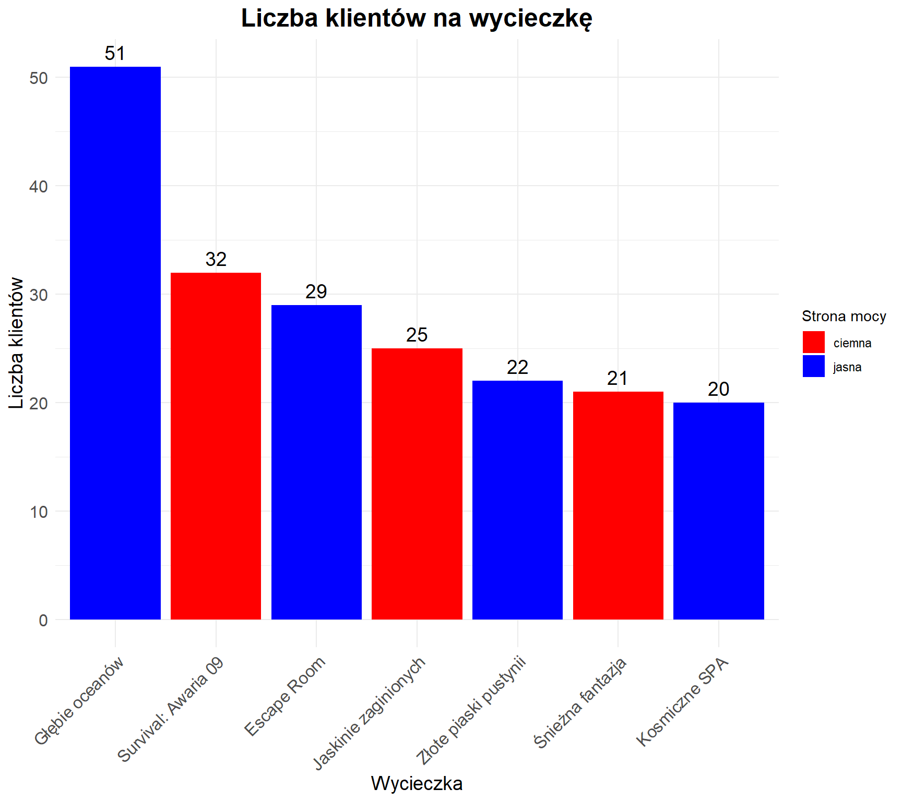
Dla najczęściej pojawiającego się rodzaju wypadku, jakim jest “Wypadek medyczny”, 78.57% klientów posiada ubezpieczenie pokrywające koszty związane z tym wypadkiem. Dla wypadku: “Pomoc w przypadku utraty dokumentów” stosunek klientów ubezpieczonych do wszystkich klientów, którzy tego wypadku doświadczyli, jest największy i wynosi 100%. Liczba tych wypadków wynosi 3. Z kolei klienci najrzadziej posiadają ubezpieczenie na “Klonowanie w razie śmierci” w stosunku do liczby wypadków tego typu.
7. Ocena ofert
7.1. Najlepiej oceniane wycieczki
Oceny wystawiane przez klientów po zakończonych wycieczkach są istotnym wskaźnikiem jakości oferty turystycznej. Stanowią one cenne źródło informacji dla firmy, pozwalające na identyfikację mocnych i słabych stron oraz monitorowanie poziomu satysfakcji uczestników. Klienci mają możliwość oceny wycieczki w pięciostopiowej skali (1-5). Przyjrzyjmy się zatem, jak klienci oceniają poszczególne wycieczki.
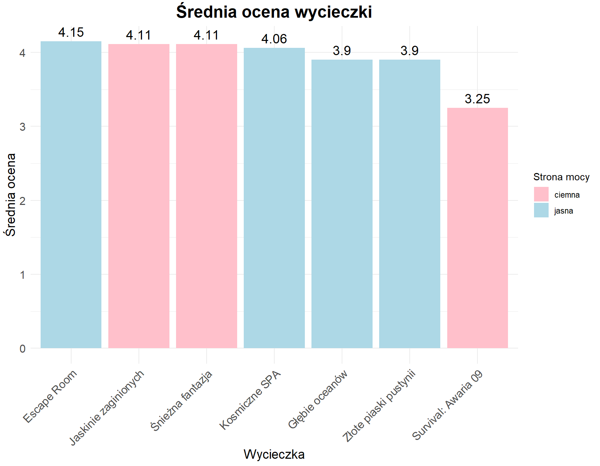
Najlepiej ocenianą wycieczką jest Escape Room, z oceną 4.2083333. Najmniej do gustu przypadła za to wycieczka Survival: Awaria 09, gdzie ocena wyniosła 3.7105263.
Jak możemy zauważyć, najlepiej oceniana wycieczka pokrywa się z tą, która cieszy się największą popularnością wśród klientów. Potwierdza to wykres z części 2.2, przedstawiający liczbę uczestników poszczególnych wycieczek.
8. Załoga i współpraca
8.1. Najczęstsze pary pilot–przewodnik podczas wyjazdów
W ostatnim etapie analizy przyjrzano się składom załóg uczestniczących w wycieczkach, koncentrując się na współpracy między pilotami a przewodnikami. Celem było zidentyfikowanie par pracowników, które najczęściej odbywały wspólne wyjazdy. Analiza została przeprowadzona na podstawie danych zawartych w tabeli opisującej wszystkie zorganizowane wyprawy. Dla każdego wyjazdu wyodrębniono kombinacje pilot–przewodnik, a następnie obliczono częstotliwość ich wspólnych podróży, co pozwoliło wskazać najczęściej współpracujące duety.
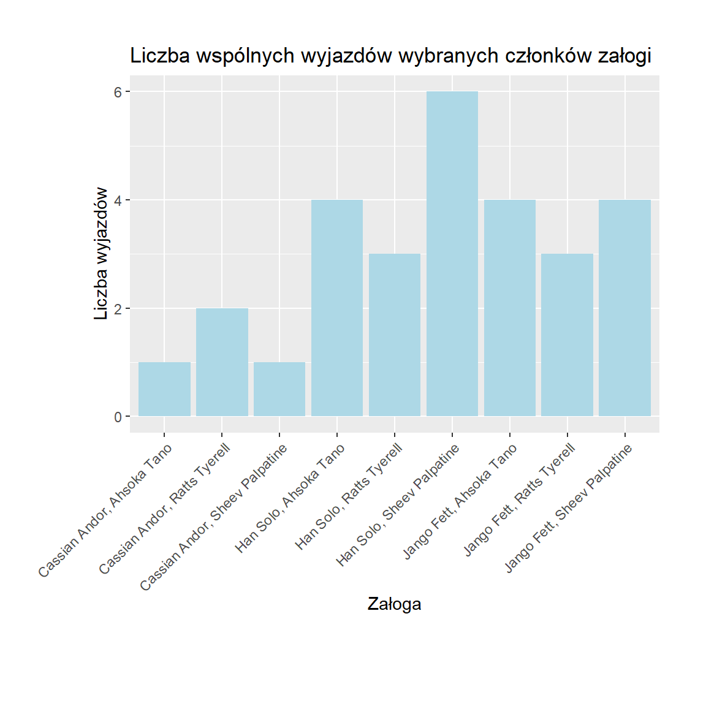
Z wykresu powyżej możemy odczytać, że Han Solo, Ahsoka Tano są członkami załogi, którzy wylatują ze sobą na wycieczki najczęściej. Może to oznaczać, że zgłaszają się do wyjazdów wspólnie, ponieważ dobrze im się współpracuje. Firma powinna wziąć to pod uwagę podczas planowania kolejnych lotów - jeżeli relacje pomiędzy pracownikami są dobre, znajduje to przełożenie na atmosferę całej wycieczki, a dzięki temu - również na pozytywną opinię klientów.
9. Podsumowanie
Przeprowadzone analizy umożliwiły wszechstronną ocenę sytuacji dotyczącej organizacji wypraw w kosmos. Stworzona baza danych stanowiła podstawę do przeanalizowania wielu kluczowych obszarów działalności firmy.
Dokonano analizy zysków i kosztów utrzymania, sprawdzono sezonowość popytu na wyprawy, jak również preferencje klientów dotyczące wyboru „jasnej” lub „ciemnej strony mocy”. Dodatkowo przeanalizowano przypadki wypadków podczas wypraw — określono ich rodzaje, skutki oraz sprawdzono, jak wygląda ubezpieczenie klientów w takiej sytuacji.
Najważniejsze wnioski z badań to:
Analiza klientów powracających i jednorazowych pokazała, które wycieczki cieszą się największą lojalnością i które wymagają poprawy, by zwiększyć wskaźnik powrotów.
Preferencje względem „strony mocy” ujawniły wyraźne zainteresowanie jedną stroną, co wskazuje na potrzebę rozbudowy oferty w tym kierunku.
Bezpieczeństwo i ubezpieczenia wykazały, że nie wszyscy klienci mają odpowiednie zabezpieczenie na najczęściej występujące wypadki, co sugeruje konieczność lepszego informowania i dostosowania produktów ubezpieczeniowych.
Oceny wycieczek pozwoliły wskazać najlepsze i najsłabsze oferty, dając kierunek do optymalizacji programów wypraw.
Tak przeprowadzone badania umożliwiły pełniejsze zrozumienie funkcjonowania firmy oraz identyfikowanie obszarów wymagających uwagi lub zmian. Wyniki stanowią solidną podstawę do podejmowania skuteczniejszych decyzji zarządczych w zakresie organizacji wypraw w kosmos, pozwalając na lepsze dopasowanie oferty do oczekiwań klientów i zwiększenie satysfakcji oraz bezpieczeństwa uczestników.